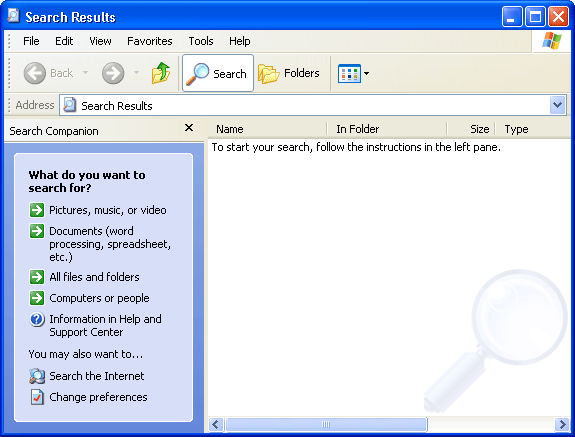
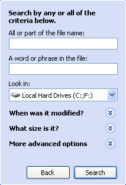
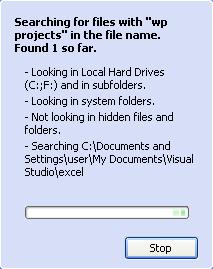
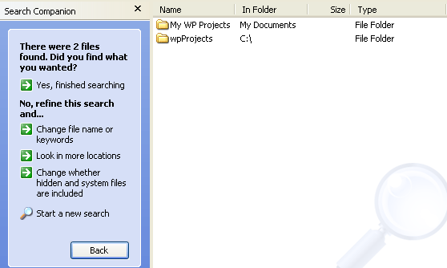

Free
computer Tutorials
|
Free
computer Tutorials
|
|
 home home |
Stay at Home and Learn | ||||
Finding Files in Windows XP
Sometimes, you will have created a file or a folder and just can't remember where it is. If you have a very big hard drive, there are a lot of places to look for a single file. You may never find it, even with the help of Windows Explorer. One thing you can do to track down a missing file or folder is to use the Windows XP Search tool. Here's how to use it.
 (If you see an animated dog, and it's annoying you, you can turn it off by clicking it with the right mouse button. Then click "turn off animated character".)
Under "What do you want to search for" click the option "All files and folders". You should see the following:  You are given a number of different option to conduct your search. Click inside the top text box, under "All or part of the file name". Enter the name of the file, then click the Search button. (Just enter a few lettters of the file name, if you can't remeber exactly what it's called.) Windows XP will start the search, and you'll see something like this:  In the image above we're searching for a file called "wp projects". If XP finds any files or folders with your search term in it, it will display them in the window to the right. In the image below XP has found two folders with our search term in the name.  Even though we typed all our letters in lowercase, the folders found have capital letters in them. In others words, the search is not case sensitive. Notice in the picture that under the heading "In Folder" it says "C" and "My Documents". These are the two place where the folders are. So we have a folder called "My WP Projects" in the "My Documents" folder of the hard drive, and we also have one called wpProjects. This one is in the main C:\ root folder. You can open any of the files or folders found simply by double clicking on them. But double click a file or folder under the "Name" heading of the Window, and not the "In Folder" heading. Finally, to get rid of the Search Window, click the red X in the top right corner of the box. The last part of Computing for Beginners is a section without which no beginners guide would be complete - Wallpapers and Screensavers!
<--Back One Page Move on to the Next Part-->
|
|||||
|